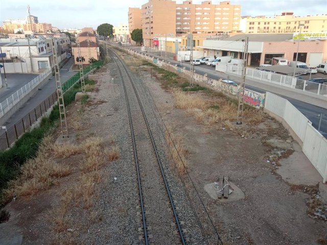

Noticias Nacionales
El Gobierno destina 80.000 euros para reparar daños causados por las inundaciones de agosto en el que afectaron a instalaciones críticas del Instituto Nacional de Técnica Aeroespacial INTA.

Educación exige al Ministerio que pague la seguridad social de los 43.000 becarios valencianos, los rectores de las universidades españolas ya han avisado que debe haber dotación económica para evitar grandes pérdidas a las universidades. El próximo 1 de enero de 2024, 43.000 becarios valencianos cotizarán a la Seguridad Social. Además, cuando se apruebe el estatuto del becario, cobrarán una pequeña cantidad.
La Mesa del Tren en defensa del Ferrocarril reclama una "plataforma real" de Alta Velocidad entre Almería y Granada en vez de un modelo low cost. "Planteamos una inversión potente"

España pierde el tren: su PIB per cápita frente a la eurozona se estanca y vuelve al nivel de los 70's El desempleo y la productividad estancan el PIB per cápita español en relación al nivel medio de la eurozona y vuelve al nivel de hace cinco décadas.

Las carreras previas al Maratón Valencia en Super Running La prueba solidaria por el Cáncer de Pulmón o el Medio Maratón de Paterna, antesala de la gran cita del 3 de diciembre.

La novena edición de la Feria del Cava Valenciano marca "el inicio de la campaña de Navidad"

La Consejería de Educación destinará 1,3 millones a conciertos educativos en centros privados.
El presupuesto del Ayuntamiento de València asciende a 1.116,9 millones (+7,11%) y prioriza seguridad y vivienda.
El Ayuntamiento de València eleva las inversiones en 2024 hasta los 167 millones, un 15% más.